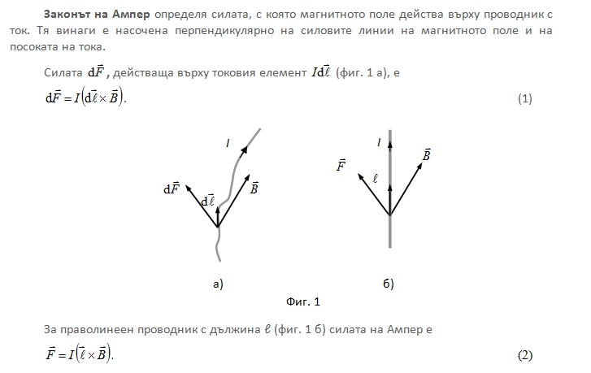
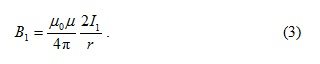
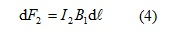
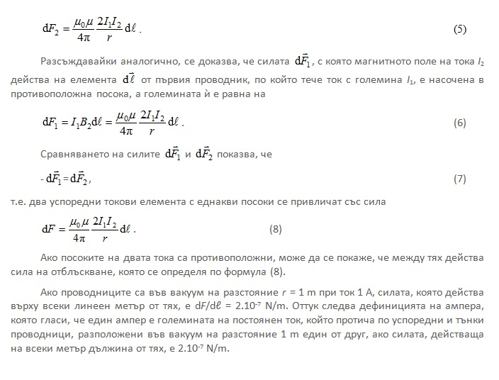
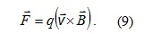
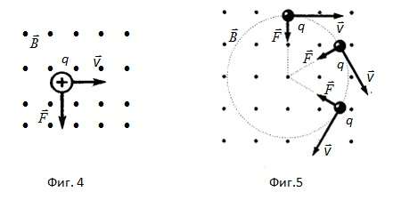
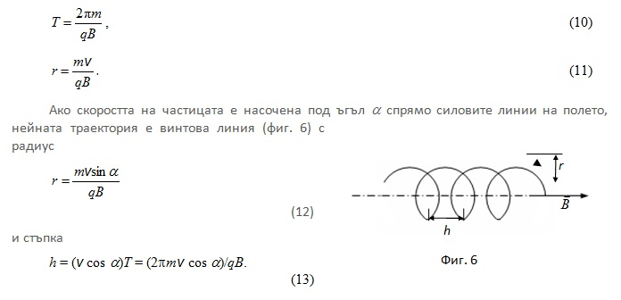
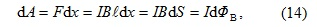
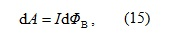
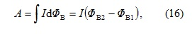

1. Закон на Ампер
-

-
Законът на Ампер се използва за определяне силите на взаимодействие между два тока. Разглеждат се два безкрайни, успоредни и праволинейни тока I1 и I2 (фиг. 2), разстоянието между които е равно на r. Всеки от тях създава магнитно поле, което съгласно закона на Ампер действа с определена сила на другия проводник. Токът I1 създава магнитно поле, чиито линии на магнитната индукция са концентрични окръжности. Посоката на вектора B1 се определя по правилото на дясната ръка, а големината му е равна на

-
Посоката на силата dF2 , с която полето B1 действа върху елементарния участък d𝓁 от втория ток, се определя по правилото на лявата ръка, което гласи следното: Ако дланта на лявата ръка се разположи така, че да се пробожда от линиите на магнитната индукция, а четирите изпънати пръсти сочат посоката на тока в проводника, изпънатият палец показва посоката на силата, действаща на проводника, по който тече ток. Посоката на тази сила е означена на фигура 3.2. Нейната големина е

(отчетено е, че ъгълът α между векторите d𝓁 и B1 е прав). Като се замести стойността на B1 , се получава

-
2. Сила на Лоренц
Силата, която действа върху заредена частица със заряд q, движеща се със скорост V в магнитно поле с индукция B , се нарича лоренцова сила (фиг. 4)

Силата на Лоренц е перпендикулярна на вектора на магнитната индукция и на скоростта на частицата. Нейната посока се определя с помощта на правилото на лявата ръка. Ако дланта на лявата ръка се разположи така, че да се пробожда от вектора B , а четирите опънати пръсти да сочат посоката на вектора V , изпънатият палец определя посоката на силата, действаща на положителния заряд. Силата на Лоренц не извършва работа, поради което в постоянно магнитно поле енергията на заредена частица не се изменя. Действието на магнитното поле върху частицата се свежда само до изменение на нейната траектория на движение.

Ако скоростта на заредената частица е перпендикулярна на вектора на магнитната индукция, тя се движи по окръжност в магнитното поле в равнина, към която векторът е перпендикулярен (фиг. 5). В еднородно магнитно поле периодът на обикаляне на заредената частица по кръговата орбита и нейният радиус са съответно

-
3. Работа при преместване на токов контур в магнитно поле
Върху всеки проводник с ток, който е поставен в магнитно поле, действа сила на Ампер и ако същият се движи тя извършва работа. На фиг. 7 една от страните на токовия контур е подвижна, а индукцията на магнитното поле B е ориентирана перпендикулярно на чертежа навън. Под действие на силата на Ампер, чиято големина е FA=IB𝓁 , подвижната страна се премества. При означените на фигурата посоки на тока и на магнитното поле се вижда, че силата е насочена надясно. Под действие на тази сила при преместване dx от положение “1” в положение “2” работата, извършена от магнитното поле е равна на
-

където 𝓁dx=dS е площта, която се пресича от проводника при преместването му в магнитното поле, а BdS=dФB е потокът на вектора на магнитната индукция през тази площ. Следователно

т.е. работата при преместване на проводника, по който тече електричен ток, в магнитно поле е равна на произведението от големината на тока и магнитния поток, пресечен от движещия се проводник. Получената формула е в сила за произволна посока на вектора B .
При постоянна стойност на тока пълната работа се получава, като се интегрира горния израз
където ФВ1 и ФВ2 са магнитните потоци през токовия контур съответно в положение “1” и в положение “2”.
-
Видео
-
© ROGACHEV